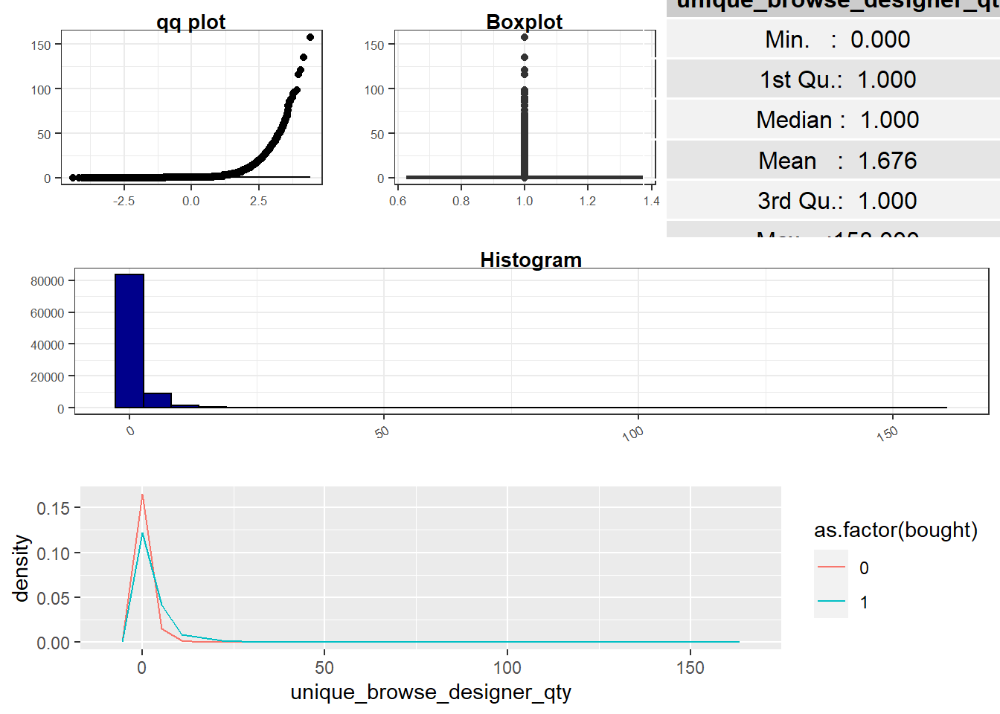
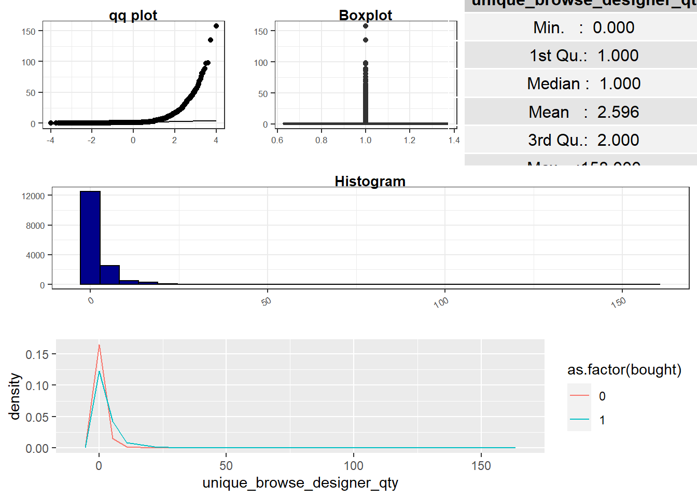
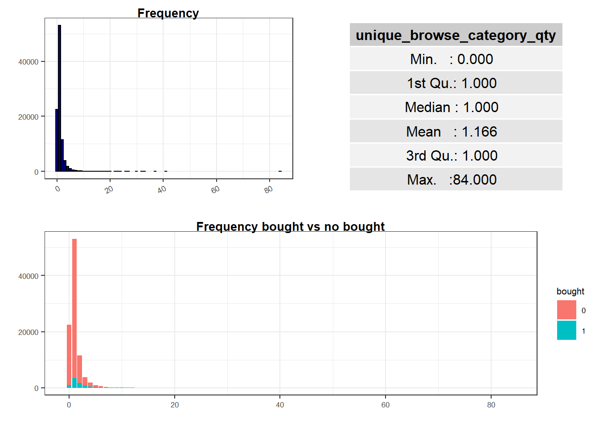
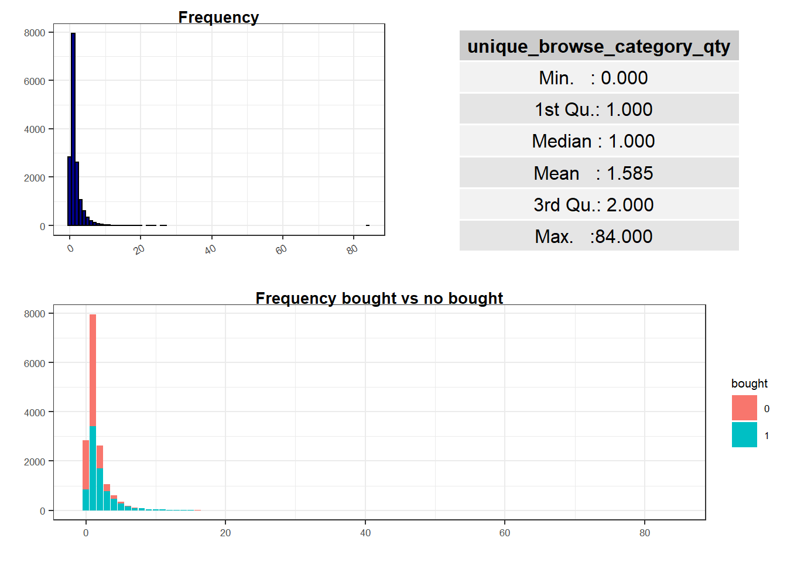

Stage 2 Data aquisition and understanding
2.1 Description
Two datasets were made available for analysis. One with a balanced class for the target variable and the other raw. This analysis focus on the full dataset.
From the available description the available columns follow into one of the following categories:
Irrelevant for the project;
Target or dependent Variable: what will be studied;
Customer Behavior related Features: potential features which reflect how users behaved on each session and can explain the target variable;
Customer Journey related Features: potential features contain information on how uses interacted with the on-line shop;
Client Segment related Features: potential features which provide information on how a user might be classified from a marketing perspective;
Device and Geography related Features: provide information regarding location and access device used by a user.
str(unbalanced_data)## tibble [95,000 x 20] (S3: tbl_df/tbl/data.frame)
## $ session_id : Factor w/ 95000 levels "00012961-8ad6-412d-9a5b-9eada1b93c97",..: 63567 36472 84761 59471 82382 75884 38721 75862 6836 90844 ...
## $ plaform : Factor w/ 2 levels "mobile_app","website": 2 2 1 1 2 2 2 2 1 2 ...
## $ segment : Factor w/ 6 levels "FFACCESS-Bronze",..: 6 6 1 6 6 6 6 6 2 3 ...
## $ customer_type : Factor w/ 2 levels "customer","prospect": 2 2 1 1 2 2 2 2 1 1 ...
## $ device_group : Factor w/ 3 levels "App","Desktop",..: 3 3 1 1 3 3 3 3 1 2 ...
## $ visitor_type : Factor w/ 2 levels "new","returning": 1 2 2 2 1 2 1 1 2 1 ...
## $ has_listing : Factor w/ 2 levels "0","1": 2 1 2 2 1 1 1 2 2 2 ...
## $ has_used_search : Factor w/ 2 levels "0","1": 1 1 1 1 1 1 1 1 2 2 ...
## $ has_recommendation : Factor w/ 2 levels "0","1": 1 2 2 1 1 1 1 1 1 2 ...
## $ has_add_to_wishlist : Factor w/ 2 levels "0","1": 1 1 1 2 1 1 1 1 1 1 ...
## $ has_add_to_bag : Factor w/ 2 levels "0","1": 1 1 1 1 1 1 1 1 1 1 ...
## $ duration : num [1:95000] 0 0 27 88 0 128 0 0 9 342 ...
## $ view_qty : num [1:95000] 1 1 10 15 1 2 1 1 4 7 ...
## $ unique_product_qty : num [1:95000] 0 1 1 5 1 2 1 0 0 2 ...
## $ unique_browse_designer_qty: num [1:95000] 0 1 1 1 1 1 1 1 1 3 ...
## $ unique_browse_category_qty: Factor w/ 32 levels "0","1","2","3",..: 2 2 2 2 2 2 2 2 1 3 ...
## $ is_subscribed : Factor w/ 3 levels "No","Unknown",..: NA NA 1 3 NA NA NA NA 3 3 ...
## $ browser_name : Factor w/ 51 levels "AliApp","Android",..: 37 5 NA NA 21 37 28 5 NA 37 ...
## $ country : Factor w/ 162 levels "AD","AE","AF",..: 154 111 134 134 154 134 11 73 128 154 ...
## $ bought : Factor w/ 2 levels "0","1": 1 1 1 1 1 1 1 1 1 1 ...2.2 Irrelevant or technical information
Session_id is a unique key which sole purpose is to uniquely identify each sessions and contains no exploratory power, therefore it will be removed from future analysis.
# test if a single session can have more than one row
length( unique(unbalanced_data$session_id) ) == nrow(unbalanced_data)## [1] TRUE2.3 Target Variable: To buy or not to buy …
Boolean variable which assumes the values of 1 when a transaction happened on the session and zero other wise. Its the objective variable of this project.
The available dataset with full data presents a severe class imbalance towards not buy which can and will Bias model output (a model assuming that nobody buys on each session is already “92% of the times right”). This bias is corrected on the balanced dataset at the expanse of some changes on

grid.draw(balanced_grid)
2.4 Customer Behavior Features
In this section we will explore the variables available using both unbalanced and balanced data. In special we will focus on the following questions:
- What type of variation occurs within my variables?
- What type of covariation occurs between my variables?
2.4.1 Duration
Continuous variable representing the time a user was on a particular sessions. Values measured in seconds. No specifics are given regarding the concept of session used. The market standard is to limit session duration to an engagement window between 25 to 30 minutes. Above that time cap, a new session would start (even if the user is still navigating the site). It will assumed that no such cap exist and therefore extreme values are not due to technical issues on web metrics.


Distribution information shows a severely left skewed distribution which is confirmed by the behavior of the qq_plot. This is present on both raw and balanced data. The max duration of 2.0295^{4} means that at least one session was {r} max(unbalanced_data$duration)/(60 * 60) hours long, which, given what was said regarding session cap won’t be considered as an outlier due to error.
Data shows that visit duration is a long tail with a great majority of users staying just a fraction but a long line of users (power users?) which stay for longer. This distribution does not allow for a good analysis of outliers of the distribution given its nature and might prove to be tricky during modeling due to its non Gaussian nature.
density <- ggplot(unbalanced_data, aes(x = duration)) +
geom_density(color="darkblue") +
theme_masterDS() +
labs(
x = "",
y = "",
title = "Density"
)
boxplot <- ggplot(unbalanced_data, aes(x = 1, y = duration)) +
geom_boxplot() +
theme_masterDS()+
labs(
x = "",
y="",
title = "Boxplot"
)
density_log <- ggplot(unbalanced_data, aes(x = log(duration))) +
geom_density(color="darkblue") +
theme_masterDS() +
labs(
x = "",
y = "",
title = "Density (log transform)"
)
boxplot_log <- ggplot(unbalanced_data, aes(x = 1, y = log(duration))) +
geom_boxplot() +
theme_masterDS()+
labs(
x = "",
y="",
title = "Boxplot (log transform)"
)
grid.arrange(density, boxplot, density_log, boxplot_log, layout_matrix = rbind(c(1,2),c(3,4)))## Warning: Removed 41417 rows containing non-finite values (stat_density).## Warning: Removed 41417 rows containing non-finite values (stat_boxplot).
As a preprocess step this feature will be log transformed. No more complex Box-Cox transformation will be used given that good results can already be achieved with the current transformation. No missing values were found.
## Warning: Removed 41417 rows containing non-finite values (stat_boxplot).
## Warning: Removed 3823 rows containing non-finite values (stat_boxplot).
Ploted against the target variable it seems to imply a positive relationship between duration and conversion. From the sample sessions that converted had on median a higher duration.
2.4.2 Page View Quantity
Discrete variable measuring the number of views during a session.


Distribution information shows a severely left skewed distribution which is confirmed by the behavior of the qq_plot. This is present on both raw and balanced data. The max duration is of 1151.
Despite is distribution the data shows a median of 10 page views which suggest an interesting engagement for a e-commerce provided other indicators regarding navigation are solid (if a user is jumping between pages because they don’t load properly, an increase on page views might no be beneficial).
Given the available information we cannot conclude that outliers due to errors exist. In an attempt to normalize the distribution a Box-Cox transformation will be used with a Optimized Lambda.
## `stat_bin()` using `bins = 30`. Pick better value with `binwidth`.
## `stat_bin()` using `bins = 30`. Pick better value with `binwidth`. With this transformation it is now visible 2 segments of sessions which deserve attention, sessions with zero views or just 1 view.
With this transformation it is now visible 2 segments of sessions which deserve attention, sessions with zero views or just 1 view.
The information available provides no information whatsoever regardingt definition of view. The standard (defined by google) is the first hit at log to be a pageview. Therefore, technically all sessions would have a view. Using the same approach, a 1 view session is technically called a bounce. Once again assuming Googles standard (it owns 97% of the analytics market …) a bounce is a session with just a starting hit but not information regarding log out (duration is a difference based calculation).
On a standard scenario the approach would be to remove all observations with a zero pageviews (technical errors) and session with 1 page view (if not other information regarding duration is available). In the scenario in analysis, given the available information we can’t assume zero page views to be a technical error and therefore will filter the dataset for observations with zero or one page views and a session duration smaller than 2 seconds.


The balanced data to be used with modeling is already close to normal distribution.
 Compared by conversion the data seems to suggest that sessions with conversion had a higher number of page views.
Compared by conversion the data seems to suggest that sessions with conversion had a higher number of page views.
2.4.3 Product Pages unique page views
Discrete variable measuring the visits product related pages had.
grid.draw(eda_unbalanced$unique_product_qty)
grid.draw(eda_balanced$unique_product_qty)
The initial graphic analysis shows a right skewed distribution similar to was seen on before on Pageviews. Nonetheless, in this scenario zero page views is a acceptable outcome. When the target class is taken into consideration it seems to sugest a teneous impact albeit its true effects might be hidden by the distribution skew.

Ploted together target, pageviews and product pageviews it becomes more evident that the relationship between target and product pageviews is not very visable but the Chi test lets us renouce the null hypothesis.
##
## Pearson's Chi-squared test
##
## data: x and as.factor(unbalanced_data$bought)
## X-squared = 8099.1, df = 165, p-value < 2.2e-16On the other hand, there seems to have a strong relation positive relation between pageviews and pagevies product. This may suggest an interaction between both features. Given the nature of this feature we will explore the impact of converting into a ratio using page views as denominator since product page view is in fact a subgroup of pageviews.


 This transformation provides more insights into the behaviour of the average user indicating that on average 25% of page navigation is done on product related pages (from and into). Simultaneously it smooths the skewed effect reported earlier
This transformation provides more insights into the behaviour of the average user indicating that on average 25% of page navigation is done on product related pages (from and into). Simultaneously it smooths the skewed effect reported earlier
## Warning: Removed 1833 rows containing non-finite values (stat_boxplot).
If the e-commecer has a more transactional focus it might not come as surprice the above plot and it seems to imply that user might already know what they want to buy prior to visit.
Similar transformation will be done to the subsquent variables-
2.4.4 Designer Browsing unique page views
Discrete variable measuring the number of Designers researched.
grid.draw(eda_unbalanced$unique_browse_designer_qty)
grid.draw(eda_balanced$unique_browse_designer_qty)
Similar approach done before


This transformation provides more insights into the behaviour of the average user indicating that on average 25% of page navigation is done on product related pages (from and into). Simultaneously it smooths the skewed effect reported earlier
## Warning: Removed 1421 rows containing non-finite values (stat_boxplot).
2.4.5 Products categories unique id
Discrete variable measuring the visits Designer related pages had.
grid.draw(eda_unbalanced$unique_browse_category_qty)
grid.draw(eda_balanced$unique_browse_category_qty)
Similar approach done before

## NULL

This transformation provides more insights into the behaviour of the average user indicating that on average 25% of page navigation is done on product related pages (from and into). Simultaneously it smooths the skewed effect reported earlier
## Warning: Removed 1542 rows containing non-finite values (stat_boxplot).
2.4.6 Potential ideas for feature engineering which were not implemented
- The available data could synthesized using a non-supervised cluster algorithm which would help identify subsets of behaviors to be used during modeling. This approach has the advantage of possible reduce 4 variables into one.
2.8 Summary of findings
- Features Device Group and Platform showed a strong relationship between them. Given that Platform provides more information Device Group will be removed
- Features starting with “has_” refere to milestones on customer journey, therefore the need to include all of them should be taken in consideration. We will use PCA to merge this into one feature and experiment between the use of them individual or together,
- Duration feature is Right Skewed and contains observations which lack business sense. To avoid any impact on the model, specially on ones more sensible to variance, it will be log transformed and observations above 24hours will be removed
- Replace all Missing values on country, browser_name and is_subscribed using Nearest Neighbors imputation with a very a k of 3,
- Reduce the number of observations of class country and browser_name by compressing smaller ones into a generic class named others. This will be done because some models do not manage very well the fact that some dummy variables only have one level,
- Reduce the number of levels of Segment by re factoring into a class of has or not segment,
- Specially for the use of Neural Networks and Supervisor Vector Machines, numeric variables will be normalized and scaled
- Converts unique_browse_designer_qty, unique_product_qty, unique_browse_designer_qty, unique_browse_category_qty to ratios over Total Pageviews (view_qty) which provides information on the amount of page views actually related to that category and subsquently log transform,
- Sessions with duration lower than 2 seconds and a total page view of 0 or 1 will be removed,
- The graphical analysis already provides a important insight given the business objectives. From the unbalanced data available we can conclude that around of 46% shopping carts are lost on that session. That raises a question of how are this recovered (example on a next session) or if this means that all this sales are lost right at the end of the sales funnel.